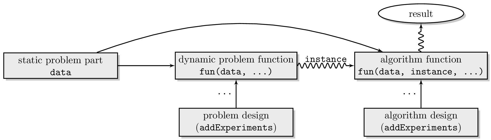
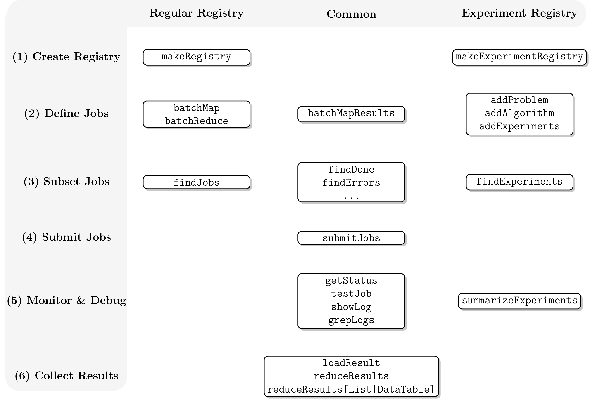

Setup
Cluster Functions
The communication with the batch system is managed via so-called cluster functions. They are created with the constructor makeClusterFunctions which defines how jobs are submitted on your system. Furthermore, you may provide functions to list queued/running jobs and to kill jobs.
Usually you do not have to start from scratch but can just use one of the cluster functions which ship with the package:
- Interactive Cluster Functions (default): docs, implementation
- Multicore Cluster Functions: docs, implementation
- Socket Cluster Functions: docs, implementation
- Makeshift SSH cluster: docs, implementation
- Docker Swarm: docs, implementation
- IBM Spectrum Load Sharing Facility (LSF): docs, implementation
- OpenLava: docs, implementation
- Univa Grid Engine / Oracle Grid Engine (OGE) / Sun Grid Engine (SGE): docs, implementation
- Slurm: docs, implementation
- TORQUE/OpenPBS: docs, implementation
To use the package with the socket cluster functions, you would call the respective constructor makeClusterFunctionsSocket():
reg = makeRegistry(NA)
reg$cluster.functions = makeClusterFunctionsSocket(2)To make this selection permanent for this registry, save the Registry with saveRegistry(). To make your cluster function selection permanent for a specific system across R sessions for all new Registries, you can set up a configuration file (see below).
If you have trouble debugging your cluster functions, you can enable
the debug mode for extra output. To do so, install the debugme package
and set the environment variable DEBUGME to
batchtools before you load the batchtools
package:
Sys.setenv(DEBUGME = "batchtools")
library(batchtools)Template Files
Many cluster functions require a template file as argument. These templates are used to communicate with the scheduler and contain placeholders to evaluate arbitrary R expressions. Internally, the brew package is used for this purpose. Some exemplary template files can be found here. It would be great if you would help expand this collection to cover more exotic configurations. To do so, please send your template via mail or open a new pull request.
Note that all variables defined in a JobCollection
can be used inside the template. If you need to pass extra variables,
you can set them via the argument resources of submitJobs().
If the flexibility which comes with templating is not sufficient, you can still construct a custom cluster function implementation yourself using the provided constructor.
Configuration File
The configuration file can be used to set system specific options.
Its default location depends on the operating system (see Registry),
but for the first time setup you can put one in the current working
directory (as reported by getwd()). In order to set the
cluster function implementation, you would generate a file with the
following content:
cluster.functions = makeClusterFunctionsInteractive()The configuration file is parsed whenever you create or load a Registry.
It is sourced inside of your registry which has the advantage that you
can (a) access all of the parameters which are passed to makeRegistry
and (b) you can also directly change them. Lets say you always want your
working directory in your home directory and you always want to load the
checkmate package on the nodes, you can just append these
lines:
work.dir = "~"
packages = union(packages, "checkmate")See the documentation on Registry for a more complete list of supported configuration options.
Migration from
BatchJobs/Batchexperiments
The development of BatchJobs and BatchExperiments is discontinued because of the following reasons:
- Maintainability: The packages BatchJobs and BatchExperiments are tightly connected which makes maintaining difficult. Changes have to be synchronized and tested against the current CRAN versions for compatibility. Furthermore, BatchExperiments violates CRAN policies by calling internal functions of BatchJobs.
- Data base issues: Although we invested weeks to mitigate issues with locks of the SQLite data base or file system (staged queries, file system timeouts, …), BatchJobs kept working unreliable on some systems with high latency or specific file systems. This made BatchJobs unusable for many users.
BatchJobs and BatchExperiments will remain on CRAN, but new features are unlikely to be ported back.
Internal Changes
- batchtools does not use SQLite anymore. Instead, all the information is stored directly in the registry using data.tables acting as an in-memory database. As a side effect, many operations are much faster.
- Nodes do not have to access the registry. submitJobs() stores a temporary object of type JobCollection on the file system which holds all the information necessary to execute a chunk of jobs via doJobCollection() on the node. This avoids file system locks because each job accesses only one file exclusively.
-
ClusterFunctionsMulticorenow uses the parallel package for multicore execution. -
ClusterFunctionsSSHcan still be used to emulate a scheduler-like system which respects the work load on the local machine. Setting the hostname to"localhost"just strips outsshof the command issued.
Interface Changes
- batchtools remembers the last created or loaded Registry and sets it as default registry. This way, you do not need to pass the registry around anymore. If you need to work with multiple registries simultaneously on the other hand, you can still do so by explicitly passing registries to the functions.
- Most functions now return a data.table
which is keyed with the
job.id. This way, return values can be joined together easily and efficient (see this help page for some examples). - The building blocks of a problem has been renamed from
staticanddynamicto the more intuitivedataandfun. Thus, algorithm function should have the formal argumentsjob,dataandinstance. - The function
makeDesignhas been removed. Parameters can be defined by just passing adata.frameordata.tableto addExperiments. For exhaustive designs, usedata.table::CJ().
Template changes
- The scheduler should directly execute the command:
Rscript -e 'batchtools::doJobCollection(<filename>)'There is no intermediate R source file like there was in
BatchJobs. * All information stored in the object JobCollection
can be accessed while brewing the template. * Extra variables may be
passed via the argument resoures of submitJobs.
New features
- Support for Docker Swarm via
ClusterFunctionsDocker. - Jobs can now be tagged and untagged to provide an easy way to group them.
- Some resources like the number of CPUs are now optionally passed to parallelMap. This eases nested parallelization, e.g. to use multicore parallelization on the slave by just setting a resource on the master. See submitJobs() for an example.
-
ClusterFunctionsare now more flexible in general as they can define hook functions which will be called at certain events. ClusterFunctionsDocker is an example use case which implements a housekeeping routine. This routine is called every time before a job is about to get submitted to the scheduler (in the case: the Docker Swarm) via the hookpre.submitand every time directly after the registry synchronized jobs stored on the file system via the hookpost.sync. - More new features are covered in the NEWS.
Porting to batchtools
The following table assists in porting to batchtools by mapping BatchJobs/BatchExperiments functions to their counterparts in batchtools. The table does not cover functions which are (a) used only internally in BatchJobs and (b) functions which have not been renamed.
| BatchJobs | batchtools |
|---|---|
addRegistryPackages |
Set reg$packages or
reg$namespaces, call saveRegistry()
|
addRegistrySourceDirs |
- |
addRegistrySourceFiles |
Set reg$source, call saveRegistry()
|
batchExpandGrid |
batchMap:
batchMap(..., args = CJ(x = 1:3, y = 1:10))
|
batchMapQuick |
btmapply |
batchReduceResults |
- |
batchUnexport |
batchExport |
filterResults |
- |
getJobIds |
findJobs |
getJobInfo |
getJobStatus |
getJob |
makeJob |
getJobParamDf |
getJobPars |
loadResults |
reduceResultsList |
reduceResultsDataFrame |
reduceResultsDataTable |
reduceResultsMatrix |
reduceResultsList
+ do.call(rbind, res)
|
reduceResultsVector |
reduceResultsDataTable |
setJobFunction |
- |
setJobNames |
- |
showStatus |
getStatus |
Example 1: Approximation of \(\pi\)
To get a first insight into the usage of batchtools, we
start with an exemplary Monte Carlo simulation to approximate \(\pi\). For background information, see Wikipedia.
First, a so-called registry object has to be created, which defines a
directory where all relevant information, files and results of the
computational jobs will be stored. There are two different types of
registry objects: First, a regular Registry
which we will use in this example. Second, an ExperimentRegistry
which provides an alternative way to define computational jobs and
thereby is tailored for a broad range of large scale computer
experiments. Here, we use a temporary registry which is stored in the
temp directory of the system and gets automatically deleted if you close
the R session.
reg = makeRegistry(file.dir = NA, seed = 1)For a permanent registry, set the file.dir to a valid
path. It can then be reused later, e.g., when you login to the system
again, by calling the function loadRegistry(file.dir).
When a registry object is created or loaded, it is stored for the
active R session as the default. Therefore the argument reg
will be ignored in functions calls of this example, assuming the correct
registry is set as default. To get the current default registry, getDefaultRegistry
can be used. To switch to another registry, use setDefaultRegistry().
First, we create a function which samples \(n\) points \((x_i, y_i)\) whereas \(x_i\) and \(y_i\) are distributed uniformly, i.e. \(x_i, y_i \sim \mathcal{U}(0,1)\). Next, the distance to the origin \((0, 0)\) is calculated and the fraction of points in the unit circle (\(d \leq 1\)) is returned.
piApprox = function(n) {
nums = matrix(runif(2 * n), ncol = 2)
d = sqrt(nums[, 1]^2 + nums[, 2]^2)
4 * mean(d <= 1)
}
set.seed(42)
piApprox(1000)## [1] 3.156We now parallelize piApprox() with
batchtools: We create 10 jobs, each doing a MC simulation
with \(10^5\) jobs. We use batchMap()
to define the jobs (note that this does not yet start the
calculation):
## Adding 10 jobs ...The length of the vector or list defines how many different jobs are
created, while the elements itself are used as arguments for the
function. The function batchMap(fun, ...) works analogously
to Map(f, ...) of the base package. An overview over the
jobs and their IDs can be retrieved with getJobTable()
which returns a data.frame with all relevant information:
names(getJobTable())## [1] "job.id" "submitted" "started" "done" "error"
## [6] "mem.used" "batch.id" "log.file" "job.hash" "job.name"
## [11] "time.queued" "time.running" "job.pars" "resources" "tags"Note that a unique job ID is assigned to each job. These IDs can be
used to restrict operations to subsets of jobs. To actually start the
calculation, call submitJobs().
The registry and the selected job IDs can be taken as arguments as well
as an arbitrary list of resource requirements, which are to be handled
by the cluster back end.
submitJobs(resources = list(walltime = 3600, memory = 1024))## Submitting 10 jobs in 10 chunks using cluster functions 'Interactive' ...In this example, a cap for the execution time (so-called walltime)
and for the maximum memory requirements are set. The progress of the
submitted jobs can be checked with getStatus().
## Status for 10 jobs at 2025-05-22 15:49:38:
## Submitted : 10 (100.0%)
## -- Queued : 0 ( 0.0%)
## -- Started : 10 (100.0%)
## ---- Running : 0 ( 0.0%)
## ---- Done : 10 (100.0%)
## ---- Error : 0 ( 0.0%)
## ---- Expired : 0 ( 0.0%)The resulting output includes the number of jobs in the registry, how
many have been submitted, have started to execute on the batch system,
are currently running, have successfully completed, and have terminated
due to an R exception. After jobs have successfully terminated, we can
load their results on the master. This can be done in a simple fashion
by using either loadResult(),
which returns a single result exactly in the form it was calculated
during mapping, or by using reduceResults(),
which is a version of Reduce() from the base package for
registry objects.
## [1] TRUE## [1] 3.140652
reduceResults(function(x, y) x + y) / 10## [1] 3.140652If you are absolutely sure that your function works, you can take a
shortcut and use batchtools in an lapply fashion
using btlapply().
This function creates a temporary registry (but you may also pass one
yourself), calls batchMap(),
wait for the jobs to terminate with waitForJobs()
and then uses reduceResultsList()
to return the results.
## [1] 3.14124Example 2: Machine Learning
We stick to a rather simple, but not unrealistic example to explain some further functionalities: Applying two classification learners to the famous iris data set (Anderson 1935), vary a few hyperparameters and evaluate the effect on the classification performance.
First, we create a registry, the central meta-data object which
records technical details and the setup of the experiments. We use an ExperimentRegistry
where the job definition is split into creating problems and algorithms.
See the paper on BatchJobs and
BatchExperiments for a detailed explanation. Again, we use a
temporary registry and make it the default registry.
library(batchtools)
reg = makeExperimentRegistry(file.dir = NA, seed = 1)Problems and Algorithms
By adding a problem to the registry, we can define the data on which
certain computational jobs shall work. This can be a matrix, data frame
or array that always stays the same for all subsequent experiments. But
it can also be of a more dynamic nature, e.g., subsamples of a dataset
or random numbers drawn from a probability distribution . Therefore the
function addProblem()
accepts static parts in its data argument, which is passed
to the argument fun which generates a (possibly stochastic)
problem instance. For data, any R object can be used. If
only data is given, the generated instance is
data. The argument fun has to be a function
with the arguments data and job (and
optionally other arbitrary parameters). The argument job is
an object of type Job
which holds additional information about the job.
We want to split the iris data set into a training set and test set.
In this example we use use subsampling which just randomly takes a
fraction of the observations as training set. We define a problem
function which returns the indices of the respective training and test
set for a split with 100 * ratio% of the observations being
in the test set:
subsample = function(data, job, ratio, ...) {
n = nrow(data)
train = sample(n, floor(n * ratio))
test = setdiff(seq_len(n), train)
list(test = test, train = train)
}addProblem()
files the problem to the file system and the problem gets recorded in
the registry.
data("iris", package = "datasets")
addProblem(name = "iris", data = iris, fun = subsample, seed = 42)## Adding problem 'iris'The function call will be evaluated at a later stage on the workers.
In this process, the data part will be loaded and passed to
the function. Note that we set a problem seed to synchronize the
experiments in the sense that the same resampled training and test sets
are used for the algorithm comparison in each distinct replication.
The algorithms for the jobs are added to the registry in a similar
manner. When using addAlgorithm(),
an identifier as well as the algorithm to apply to are required
arguments. The algorithm must be given as a function with arguments
job, data and instance. Further
arbitrary arguments (e.g., hyperparameters or strategy parameters) may
be defined analogously as for the function in addProblem.
The objects passed to the function via job and
data are here the same as above, while via
instance the return value of the evaluated problem function
is passed. The algorithm can return any R object which will
automatically be stored on the file system for later retrieval. Firstly,
we create an algorithm which applies a support vector machine:
svm.wrapper = function(data, job, instance, ...) {
library("e1071")
mod = svm(Species ~ ., data = data[instance$train, ], ...)
pred = predict(mod, newdata = data[instance$test, ], type = "class")
table(data$Species[instance$test], pred)
}
addAlgorithm(name = "svm", fun = svm.wrapper)## Adding algorithm 'svm'Secondly, a random forest of classification trees:
forest.wrapper = function(data, job, instance, ...) {
library("ranger")
mod = ranger(Species ~ ., data = data[instance$train, ], write.forest = TRUE)
pred = predict(mod, data = data[instance$test, ])
table(data$Species[instance$test], pred$predictions)
}
addAlgorithm(name = "forest", fun = forest.wrapper)## Adding algorithm 'forest'Both algorithms return a confusion matrix for the predictions on the test set, which will later be used to calculate the misclassification rate.
Note that using the ... argument in the wrapper
definitions allows us to circumvent naming specific design parameters
for now. This is an advantage if we later want to extend the set of
algorithm parameters in the experiment. The algorithms get recorded in
the registry and the corresponding functions are stored on the file
system.
Defined problems and algorithms can be queried with:
reg$problems## [1] "iris"
reg$algorithms## [1] "svm" "forest"The flow to define experiments is summarized in the following figure:

Creating jobs
addExperiments()
is used to parametrize the jobs and thereby define computational jobs.
To do so, you have to pass named lists of parameters to addExperiments().
The elements of the respective list (one for problems and one for
algorithms) must be named after the problem or algorithm they refer to.
The data frames contain parameter constellations for the problem or
algorithm function where columns must have the same names as the target
arguments. When the problem design and the algorithm design are combined
in addExperiments(),
each combination of the parameter sets of the two designs defines a
distinct job. How often each of these jobs should be computed can be
determined with the argument repls.
# problem design: try two values for the ratio parameter
pdes = list(iris = data.table(ratio = c(0.67, 0.9)))
# algorithm design: try combinations of kernel and epsilon exhaustively,
# try different number of trees for the forest
ades = list(
svm = CJ(kernel = c("linear", "polynomial", "radial"), epsilon = c(0.01, 0.1)),
forest = data.table(ntree = c(100, 500, 1000))
)
addExperiments(pdes, ades, repls = 5)## Adding 60 experiments ('iris'[2] x 'svm'[6] x repls[5]) ...## Adding 30 experiments ('iris'[2] x 'forest'[3] x repls[5]) ...The jobs are now available in the registry with an individual job ID
for each. The function summarizeExperiments()
returns a table which gives a quick overview over all defined
experiments.
## problem algorithm .count
## <char> <char> <int>
## 1: iris svm 60
## 2: iris forest 30
summarizeExperiments(by = c("problem", "algorithm", "ratio"))## problem algorithm ratio .count
## <char> <char> <num> <int>
## 1: iris svm 0.67 30
## 2: iris svm 0.90 30
## 3: iris forest 0.67 15
## 4: iris forest 0.90 15Before Submitting
Before submitting all jobs to the batch system, we encourage you to
test each algorithm individually. Or sometimes you want to submit only a
subset of experiments because the jobs vastly differ in runtime. Another
reoccurring task is the collection of results for only a subset of
experiments. For all these use cases, findExperiments()
can be employed to conveniently select a particular subset of jobs. It
returns the IDs of all experiments that match the given criteria. Your
selection can depend on substring matches of problem or algorithm IDs
using prob.name or algo.name, respectively.
You can also pass R expressions, which will be evaluated in your problem
parameter setting (prob.pars) or algorithm parameter
setting (algo.pars). The expression is then expected to
evaluate to a Boolean value. Furthermore, you can restrict the
experiments to specific replication numbers.
To illustrate findExperiments(),
we will select two experiments, one with a support vector machine and
the other with a random forest and the parameter
ntree = 1000. The selected experiment IDs are then passed
to testJob.
id1 = head(findExperiments(algo.name = "svm"), 1)
print(id1)## Key: <job.id>
## job.id
## <int>
## 1: 1
id2 = head(findExperiments(algo.name = "forest", algo.pars = (ntree == 1000)), 1)
print(id2)## Key: <job.id>
## job.id
## <int>
## 1: 71
testJob(id = id1)## ### [bt]: Generating problem instance for problem 'iris' ...
## ### [bt]: Applying algorithm 'svm' on problem 'iris' for job 1 (seed = 2) ...## pred
## setosa versicolor virginica
## setosa 13 0 0
## versicolor 0 17 0
## virginica 0 1 19
testJob(id = id2)## ### [bt]: Generating problem instance for problem 'iris' ...
## ### [bt]: Applying algorithm 'forest' on problem 'iris' for job 71 (seed = 72) ...##
## setosa versicolor virginica
## setosa 13 0 0
## versicolor 0 16 1
## virginica 0 1 19If something goes wrong, batchtools comes with a bunch
of useful debugging utilities (see separate vignette on error handling).
If everything turns out fine, we can proceed with the calculation.
Submitting and Collecting Results
To submit the jobs, we call submitJobs()
and wait for all jobs to terminate using waitForJobs().
## Submitting 90 jobs in 90 chunks using cluster functions 'Interactive' ...## [1] TRUEAfter jobs are finished, the results can be collected with reduceResultsDataTable()
where we directly extract the mean misclassification error:
reduce = function(res) list(mce = (sum(res) - sum(diag(res))) / sum(res))
results = unwrap(reduceResultsDataTable(fun = reduce))
head(results)## Key: <job.id>
## job.id mce
## <int> <num>
## 1: 1 0.02
## 2: 2 0.00
## 3: 3 0.04
## 4: 4 0.06
## 5: 5 0.02
## 6: 6 0.02Next, we merge the results table with the table of job parameters
using one of the join
helpers provided by batchtools (here, we use an inner
join):
pars = unwrap(getJobPars())
tab = ijoin(pars, results)
head(tab)## Key: <job.id>
## job.id problem algorithm ratio kernel epsilon ntree mce
## <int> <char> <char> <num> <char> <num> <num> <num>
## 1: 1 iris svm 0.67 linear 0.01 NA 0.02
## 2: 2 iris svm 0.67 linear 0.01 NA 0.00
## 3: 3 iris svm 0.67 linear 0.01 NA 0.04
## 4: 4 iris svm 0.67 linear 0.01 NA 0.06
## 5: 5 iris svm 0.67 linear 0.01 NA 0.02
## 6: 6 iris svm 0.67 linear 0.10 NA 0.02We now aggregate the results group-wise. You can use data.table,
base::aggregate(), or the dplyr
package for this purpose. Here, we use data.table
to subset the table to jobs where the ratio is 0.67 and
group by algorithm the algorithm hyperparameters:
## algorithm kernel epsilon ntree mmce
## <char> <char> <num> <num> <num>
## 1: svm linear 0.01 NA 0.028
## 2: svm linear 0.10 NA 0.028
## 3: svm polynomial 0.01 NA 0.096
## 4: svm polynomial 0.10 NA 0.096
## 5: svm radial 0.01 NA 0.044
## 6: svm radial 0.10 NA 0.044
## 7: forest <NA> NA 100 0.044
## 8: forest <NA> NA 500 0.048
## 9: forest <NA> NA 1000 0.044Example: Error Handling
In any large scale experiment many things can and will go wrong. The cluster might have an outage, jobs may run into resource limits or crash, subtle bugs in your code could be triggered or any other error condition might arise. In these situations it is important to quickly determine what went wrong and to recompute only the minimal number of required jobs.
Therefore, before you submit anything you should use testJob()
to catch errors that are easy to spot because they are raised in many or
all jobs. If external is set, this function runs the job
without side effects in an independent R process on your local machine
via Rscript similar as on the slave, redirects the output
of the process to your R console, loads the job result and returns it.
If you do not set external, the job is executed is in the
currently running R session, with the drawback that you might be unable
to catch missing variable declarations or missing package
dependencies.
By way of illustration here is a small example. First, we create a temporary registry.
library(batchtools)
reg = makeRegistry(file.dir = NA, seed = 1)Ten jobs are created, one will trow a warning and two of them will raise an exception.
flakeyFunction <- function(value) {
if (value == 5) warning("Just a simple warning")
if (value %in% c(2, 9)) stop("Ooops.")
value^2
}
batchMap(flakeyFunction, 1:10)## Adding 10 jobs ...Now that the jobs are defined, we can test jobs independently:
testJob(id = 1)## ### [bt]: Setting seed to 2 ...## [1] 1In this case, testing the job with ID = 1 provides the appropriate result but testing the job with ID = 2 leads to an error:
as.character(try(testJob(id = 2)))## ### [bt]: Setting seed to 3 ...
## Error in (function (value) : Ooops.## [1] "Error in (function (value) : Ooops.\n"We ignore the error here, and just assume everything looks fine and submit all jobs.
## Submitting 10 jobs in 10 chunks using cluster functions 'Interactive' ...## Error in (function (value) : Ooops.## Warning in (function (value) : Just a simple warning## Error in (function (value) : Ooops.## [1] FALSEAfter you have submitted jobs and suspect that something is going
wrong, the first thing to do is to run getStatus()
to display a summary of the current state of the system.
## Status for 10 jobs at 2025-05-22 15:49:42:
## Submitted : 10 (100.0%)
## -- Queued : 0 ( 0.0%)
## -- Started : 10 (100.0%)
## ---- Running : 0 ( 0.0%)
## ---- Done : 8 ( 80.0%)
## ---- Error : 2 ( 20.0%)
## ---- Expired : 0 ( 0.0%)The status message shows that two of the jobs could not be executed
successfully. To get the IDs of all jobs that failed due to an error we
can use findErrors()
and to retrieve the actual error message, we can use getErrorMessages().
## Key: <job.id>
## job.id
## <int>
## 1: 2
## 2: 9## Key: <job.id>
## job.id terminated error message
## <int> <lgcl> <lgcl> <char>
## 1: 2 TRUE TRUE Error in (function (value) : Ooops.
## 2: 9 TRUE TRUE Error in (function (value) : Ooops.If we want to peek into the R log file of a job to see more context
for the error we can use showLog()
which opens a pager or use getLog()
to get the log as character vector:
## [1] "### [bt]: Memory measurement disabled"
## [2] "### [bt]: Starting job [batchtools job.id=9]"
## [3] "### [bt]: Setting seed to 10 ..."
## [4] ""
## [5] "### [bt]: Job terminated with an exception [batchtools job.id=9]"
## [6] "### [bt]: Calculation finished!"You can also grep for messages (output suppressed in this vignette for technical reasons):
grepLogs(pattern = "simple", ignore.case = TRUE)Workflow
On the Local System
- Create a Registry with
makeRegistry()(ormakeExperimentRegistry()) or load an existing from the file system withloadRegistry(). - Define computational jobs with
batchMap()orbatchReduce()if you usedmakeRegistry()or define withaddAlgorithm(),addProblem()andaddExperiments()if you started withmakeExperimentRegistry(). It is advised to test some jobs withtestJob()in the interactive session and withtestJob(external = TRUE)in a separate R process. Note that you can add additional jobs if you are using anExperimentRegistry. - If required, query the data base for job ids depending on their
status, parameters or tags (see
findJobs()). The returned tables can easily be combined in a set-like fashion with data base verbs: union (ojoin()for outer join), intersect (ijoin()for inner join), difference (ajoin()for anti join). - Submit jobs with
submitJobs(). You can specify job resources here. If you have thousands of fast terminating jobs, you want tochunk()them first. If some jobs already terminated, you can estimate the runtimes withestimateRuntimes()and chunk jobs into heterogeneous groups withlpt()andbinpack(). - Monitor jobs.
getStatus()gives a summarizing overview. UseshowLog()andgrepLogs()to investigate log file. Run jobs in the currently running session withtestJob()to get atraceback(). - Collect (partial) results.
loadResult()retrieves a single result from the file system.reduceResults()mimicsReduce()and allows to apply a function to many files in an iterative fashion.reduceResultsList()andreduceResultsDataTable()collect results into alistordata.table, respectively.

On Multiple Systems
Most users develop and prototype their experiments on a desktop box
in their preferred IDE and later deploy to a large computing cluster.
This can be done by prototyping locally (testJob()
or submit subsets via submitJobs()).
To deploy to the cluster, just copy the file directory (as reported by
reg$file.dir) to the remote system. Next, log in on the
cluster (typically via ssh), cd to the copied
directory and call
loadRegistry("<file.dir.on.remote">, "<work.dir.on.remote>", writeable = TRUE).
This function will (a) source the local configuration file so that you
can talk to the cluster (verify by checking the output of
reg$cluster.functions) and (b) adjust the paths to the new
system if argument update.paths is set. After loading the
Registry, it is advised to test some jobs again with testJob()
before submitting all of them with
submitJobs(resources = list()) (remember you now need to
set resources!). After some jobs are finished, the file.dir
can be copied back (do not merge with the previous directory!) and
loaded again with loadRegistry().
This approach is totally viable as long as some general rules are followed:
- Make sure you have all packages installed. Package versions can be
synchronized across machines with
checkpointorpackrat. - Test jobs on the remote system prior to submit to ensure that paths are resolved correctly.
- Make sure you have set the cluster functions in a configuration file, and stick to one backend as long as jobs are running.
- The status can only be monitored on the remote system (for obvious reasons).
- Partial results can be inspected both on the remote system and on
the local system. For the latter, you need to copy over the
complete
file.dirfirst. Overwriting/merging directories is not advised as this may lead to inconsistencies if you added or removed experiments on the remote. If you have to merge, usersyncwith option--delete. Load the registry locally withloadRegistry()and collect results. Do not copy back and forth. - Avoid accessing the
file.dirwith multiple sessions simultaneously. This includes accessing the registry via a mount! Simultaneous access may lead to inconsistencies and missing results.